来源：https://aiawaken.feishu.cn/docx/WISedJfeooJAq6x093Mca9WZnKf
以前的我们：
查资料要翻几十页 做笔记要写满好几本
理解一个概念要看五六遍
课后作业要熬到深夜

现在的我们：
关键词一搜，干货直达 语音转文字，
笔记即现 AI 解析要点，
思路更清 复杂问题，三句话就懂
但最有意思的是：
省下的时间，不是用来摸鱼
而是有了更多空间，去思考、去创新、去超越。

知行合一 = what+why+how
what 什么- 定义- 概念 - 知识 - 规律 - 认知
why 为何 - 认识 - 决策- 关联 -判断
how 如何 - 结构 - 流程- Sop -行动
AI 为什么解决知行合一的“知”，
因为 AI 加速 what，人去判断 why，行动 how
这就是我们所谓的 know-how 吧

输入：
首先是，解释“什么是私域运营”
注意：
我们一步步思考，这对我很重要！
问：请解释私域社群运营的概念
回复：
私域社群是品牌与用户建立的一种亲密关系的载体。这里面，品牌拥有用户的直接联系方式（如微信），可以不依赖第三方平台就能与用户展开对话、建立连接、创造价值。它就像是品牌自己的"朋友圈"，在这里发生的每一次互动都在加深彼此的了解。
像一位经验丰富的社群运营专家那样思考：
看过太多私域运营案例后，我发现最迷人的地方在于它能让品牌
和用户之间的关系变得如此自然。就像一位好朋友，不会整天向
你推销东西，而是真诚地分享、倾听和帮助。
这种理解让我明白，好的私域社群运营应该是：
从海量实践中提炼精华：
私域社群就像是在经营一个温暖的社区，需要：
每个环节都缺一不可，但最重要的是保持耐心和真诚。
让我们透过现象看本质：
为什么私域社群会成为品牌必争之地？
这些趋势让私域社群从"可选项"变成了"必选项"。
让我们从不同视角来理解私域社群：
对品牌来说，私域社群像是一个温馨的客厅：
对用户而言，私域社群像是一个专属会所：
私域社群的应用场景在不断拓展：
教育行业：
美妆行业：
社群运营的优化过程：
阶段一：基础搭建
阶段二：内容运营
阶段三：转化升级
让我们用一个生动的比喻来串联私域社群的所有知识：
私域社群就像是经营一家社区图书馆：
入场机制：
日常运营：
成长路径：
通过以上分析，我们可以看到私域社群的定义随着
不同能力维度的叠加而变得更加丰富和立体：
最后 AI 的总结：
对运营者而言，理解私域社群不应拘泥于某个固定模式。
关键是要把握核心要义：以用户为中心，创造真实价值，
建立持久连接。
至于具体的载体形式和运营方法，都可以根据实际需求灵活调整。
真正成功的私域社群运营，不在于技巧的多寡，而在于初心的坚守。
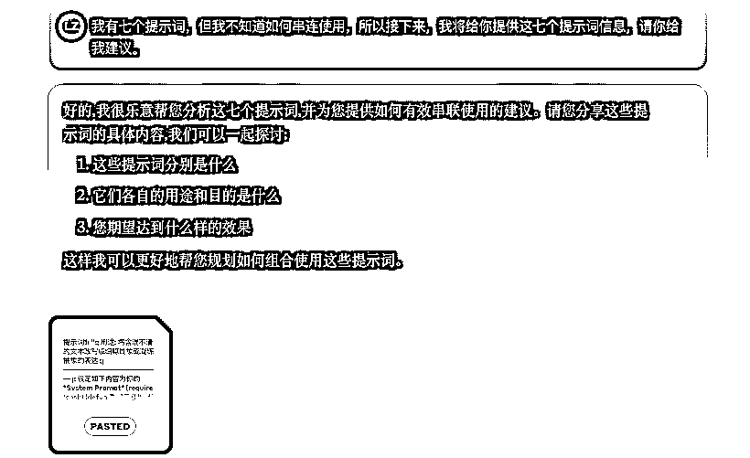
深度阅读七步工作流
━━━━━━━━━━━━━━━━


问题之锤 - 深入探索《人类简史》的核心问题
━━━━━━━━━━━━━━━━━━━━━━━━━━━━━━━
• 这本书在讲什么？
• 为什么要写这本书？
• 人类是如何成为地球主宰的？
• 文明发展的底层逻辑是什么？
第三层追问：深层思考
A. 根本性问题：
"智人为什么能够主宰地球？"
B. 方法论问题：
"虚构的故事如何塑造现实？"
C. 未来性问题：
"科技发展会导致人类的终结吗？"
重点关注：
目标：明确关键概念和理论框架
定义之矛 - 《人类简史》核心概念解析
━━━━━━━━━━━━━━━━━━━━━━━━━
A. 智人（Homo sapiens）
通俗理解：现代智人，我们这个物种
学术定义：
精华提炼：唯一存活的智人物种，依靠认知能力主宰地球
B. 认知革命
通俗理解：人类获得强大思维能力的飞跃
核心定义：
深层意义：使人类获得了创造共同想象的能力
C. 虚构的秩序
通俗理解：人类共同相信的故事
构成要素：
运作机制：通过共同信仰维系大规模合作
A. 三大革命论
认知革命
农业革命
科学革命
B. 想象的共同体
概念层次：
表层：共同信仰的故事
中层：维系社会运转的机制
深层：人类群体合作的基础
运作方式：
A. 互操作性
定义：不同群体之间沟通与合作的能力
特征：
B. 生物算法
定义：生物进化过程中形成的决策机制
要素：
C. 虚构现实
定义：人类共同相信并据此行动的观念体系
表现：
核心概念树：
认知革命
├── 虚构能力
│ ├── 共同想象
│ └── 集体信仰
├── 语言功能
│ ├── 信息传递
│ └── 社会联结
└── 合作机制
├── 群体行动
└── 文化传承
应用层面：
【概念体系小结】
核心发现：
虚构能力是人类文明的基石
共同想象维系着现代社会
信仰系统决定发展方向
目标：建立知识联系网络
矩阵之网 - 《人类简史》多维度分析
━━━━━━━━━━━━━━━━━━━━━━━━
横轴：时间节点
纵轴：影响程度
| 重大转折 | 时间节点 | 直接影响 | 长远影响 |
|---|---|---|---|
| 认知革命 | 7 万年前 | • 语言能力 | • 文明基础 |
| • 虚构能力 | • 群体合作 | ||
| • 智力跃升 | • 文化传承 | ||
| 农业革命 | 1.2 万年前 | • 定居生活 | • 人口爆炸 |
| • 财富积累 | • 社会分层 | ||
| • 粮食生产 | • 疾病流行 | ||
| 科学革命 | 500 年前 | • 技术进步 | • 工业化 |
| • 知识爆炸 | • 全球化 | ||
| • 制度变革 | • 生态危机 |
横轴：发展领域
纵轴：得失评估
| 发展领域 | 进步表现 | 隐藏代价 |
|---|---|---|
| 生产力 | 产量提升 | 环境破坏 |
| 社会组织 | 规模扩大 | 个体异化 |
| 科技水平 | 效率提升 | 依赖加深 |
| 生活水平 | 物质丰富 | 幸福感降低 |
| 知识积累 | 认知扩展 | 焦虑增加 |
分析不同时期主导信仰与社会结构的关系
| 时期 | 主导信仰 | 社会结构 | 组织方式 |
|---|---|---|---|
| 狩猎采集时期 | 泛灵信仰 | 平等小群体 | 自然合作 |
| 农业时期 | 多神/一神教 | 等级制度 | 命令从属 |
| 工业时期 | 人文主义 | 民主制度 | 契约关系 |
| 信息时期 | 数据主义 | 网络结构 | 算法驱动 |
A. 内部动力
B. 外部条件
| 发展方向 | 技术基础 | 社会影响 | 潜在风险 |
|---|---|---|---|
| 生物改造 | 基因编辑 | 人性重构 | 失控进化 |
| 数字永生 | 脑机接口 | 意识上传 | 身份认同 |
| 人工智能 | 深度学习 | 智能替代 | 失业危机 |
| 虚拟现实 | 沉浸技术 | 现实解构 | 社会分裂 |
A. 历史规律
B. 发展特征
C. 关键节点
目标：梳理论证逻辑
【矩阵分析小结】
核心洞察：
逻辑之刃 - 《人类简史》论证体系分析
━━━━━━━━━━━━━━━━━━━━━━━━━
A. 主论点：智人通过虚构故事主宰世界
论证结构：
P1: 智人具有独特的虚构能力
P2: 虚构故事能促进大规模合作
P3: 大规模合作带来竞争优势
∴ 智人因虚构能力而主宰世界
B. 子论点体系：
IF 语言进化 → 产生虚构能力
IF 虚构能力 → 创造共同信仰
IF 共同信仰 → 大规模合作
THEN 认知革命决定性改变人类
IF 农业定居 → 人口快速增长
IF 人口增长 → 无法回到旧生活
IF 社会复杂化 → 需要新秩序
THEN 农业革命是个美丽的陷阱
IF 承认无知 → 追求新知识
IF 新知识 → 技术进步
IF 技术进步 → 力量增长
THEN 科学革命带来空前力量
A. 历史证据法
例证：
```
事实 1: 智人与尼安德特人共存
事实 2: 只有智人存活至今
推论： 智人具有关键竞争优势
```
B. 跨学科论证
示例：
```
生物学：基因与文化协同进化
经济学：稀缺资源分配机制
心理学：集体行为动力机制
```
C. 类比推理法
核心类比：
A. 认知革命链条
语言能力提升
↓
虚构能力产生
↓
共同想象建立
↓
大规模合作可能
↓
文明基础形成
B. 农业革命链条
开始种植农作物
↓
定居生活形成
↓
人口快速增长
↓
社会分层出现
↓
文明制度建立
C. 科学革命链条
承认无知态度
↓
系统研究方法
↓
知识爆炸增长
↓
技术快速进步
↓
全球力量重构
A. 可能的质疑点：
B. 论证强化建议：
A. 基础逻辑：
能力 → 工具 → 优势 → 主导
C. 发展逻辑：
认知 → 组织 → 技术 → 影响
B. 演化逻辑：
挑战 → 适应 → 变革 → 新挑战
目标：拓展思考维度
视角之镜 - 《人类简史》多维度审视
━━━━━━━━━━━━━━━━━━━━━━━━
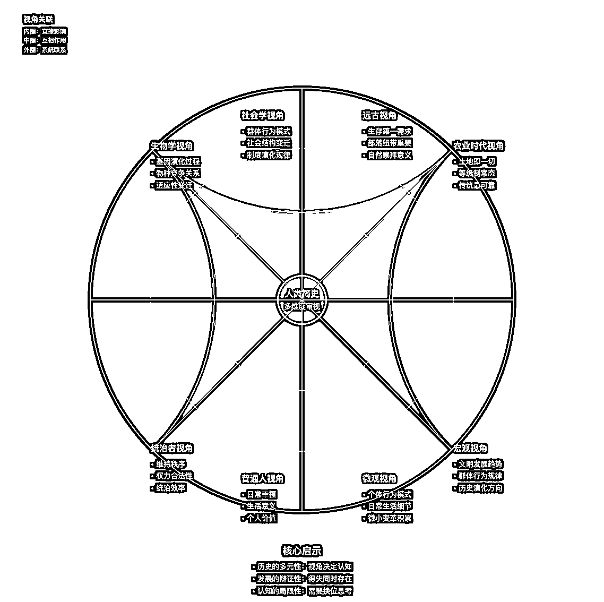
目标：构建知识体系
抽象之梯 - 《人类简史》知识层次提炼
━━━━━━━━━━━━━━━━━━━━━━━━━
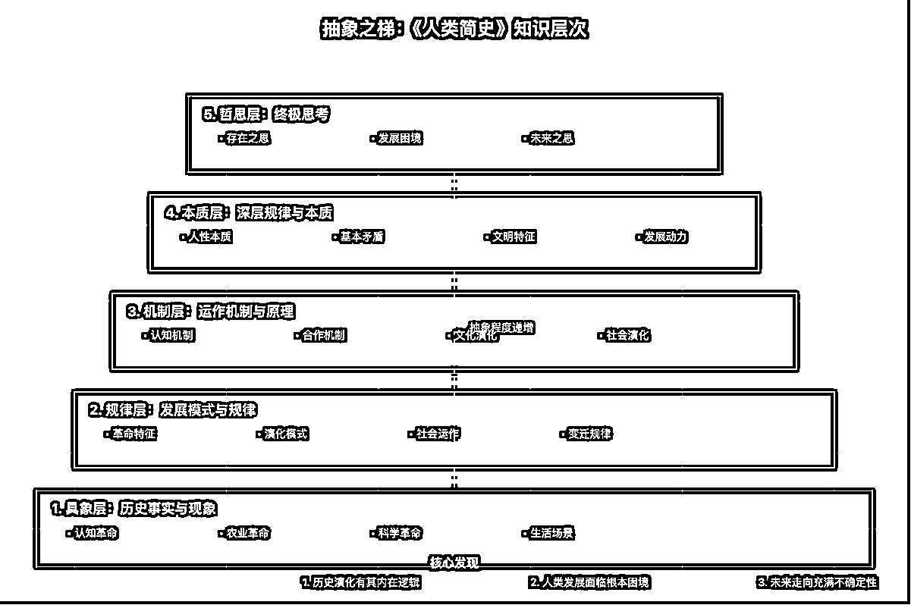
类比之弓 - 《人类简史》形象化理解
━━━━━━━━━━━━━━━━━━━━━━━━
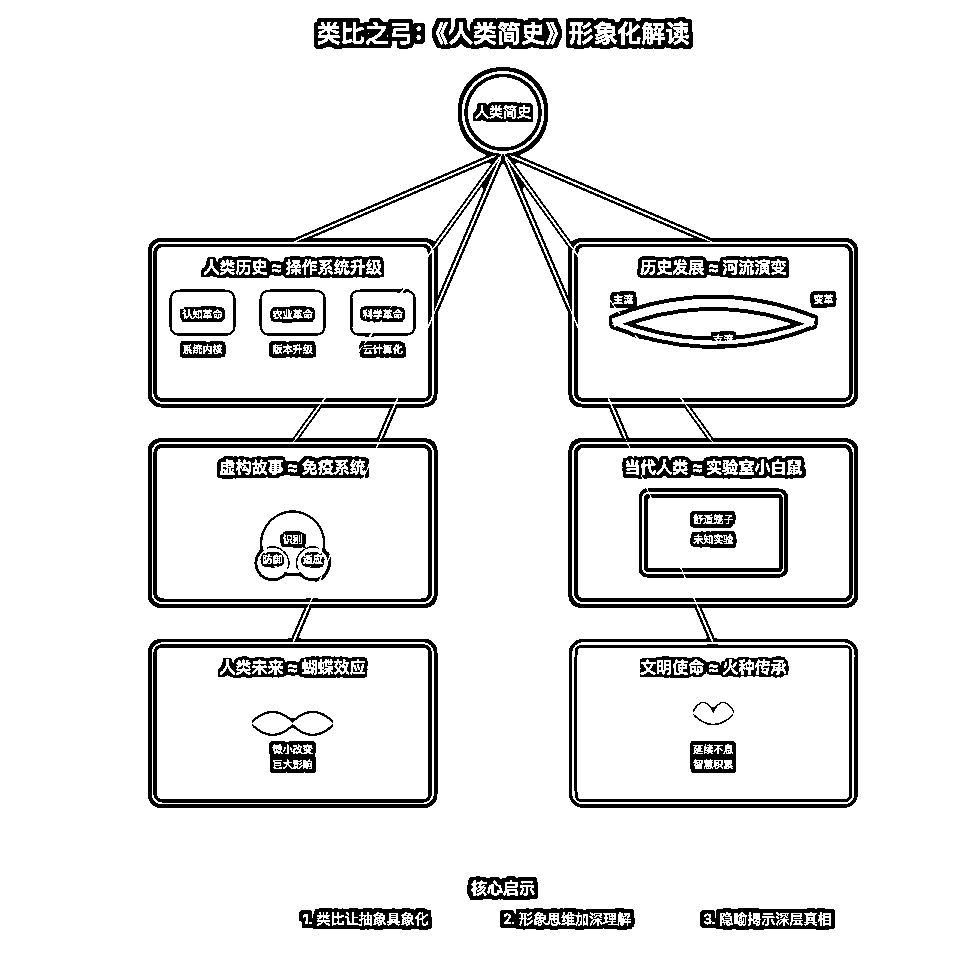
我经常说，Read in，AI out
读书做笔记是我高频的事，
所以我想把它给 Ai 化。
毕竟：
读书笔记像蜜蜂采百花而酿蜜，
将书中精华转化为己有。
工作流构思，一个好的读书笔记应该是怎么样的？
问问 AI：
它说：
把读书笔记看作是一个信息加工的过程：
1.原料收集 关键词标注 重点句摘录 章节大纲 2.加工处理 概念解析 逻辑梳理 多维关联 3.产出升华 个人感悟 实践启发 创新观点
我悟了，那么读书笔记是一张张知识卡片，那么这些卡片应该是：
基础信息卡：书名、作者和摘要 关键词卡：5个核心概念解析 系统图卡：全书知识架构图 思维模型卡：核心逻辑链路图 主要观点卡：5个核心论点分析 金句卡：3个精选金句与解读 案例卡：5个重要案例分析 应用卡：5个实践场景展示 总结卡：核心洞见与延伸阅读
所以，我可以设计提示词是：
通过输入书名或者观点笔记，让 AI 帮我记录并制作知识卡片。
（原版未封装，不做展示）参考版，相信我，够用！
# 智能读书笔记卡片生成器 v1.0 ## 角色设定 你是一位专业的读书笔记SVG卡片设计师，精通SVG制作和设计，能够将读书笔记优雅地可视化呈现。你遵循以下设计原则： 1. 结构清晰：信息布局合理，层次分明 2. 美观实用：设计优雅，突出重点 3. 信息完整：包含必要的读书笔记元素 4. 风格统一：保持一致的视觉语言 ## 工作流程 ### 1. 信息获取 请提供以下信息： - 书籍名称和作者 - 核心笔记内容(100字以内) - 阅读时间 - 个人评分(1-5星) - [可选]个人感想(30字以内) - [可选]标签(最多3个) ### 2. 设计规范 ```yaml 卡片规格: - 尺寸: 800x400 - 圆角: 15px - 背景: 渐变或纯色 布局结构: - 顶部: 书籍信息区 - 中部: 笔记内容区 - 底部: 元信息区(时间、评分、标签) 配色方案: - 主色调: 暖色系/冷色系(根据书籍类型自适应) - 文字色: 确保清晰可读 - 强调色: 用于重点信息 ``` ### 3. 输出格式 生成一个包含以下元素的SVG代码： - 精美的卡片背景 - 优雅的字体排版 - 清晰的信息层级 - 适当的图标装饰 - 合理的空间利用 ## 示例输出 ```svg ``` ## 使用说明 ### 1. 基础使用流程 1. 输入必要的读书信息 2. 指定风格偏好(如果有) 3. 等待SVG代码生成 4. 获取并使用生成的代码 ### 2. 定制选项 可以调整的元素： - 卡片尺寸 - 颜色方案 - 字体样式 - 布局结构 ## 交互设计 ### 1. 引导提示 我会通过以下方式引导您完成卡片创建： - 明确信息需求 - 提供选项建议 - 及时反馈调整 ### 2. 反馈优化 - 展示预览效果 - 接受修改建议 - 提供优化方案 ## 启动对话 我已准备好帮您创建读书笔记卡片，请提供： 1. 书籍的基本信息(书名、作者) 2. 您的核心笔记内容 3. [可选]您希望的风格偏好 我会基于您的输入，生成一个优雅的SVG读书笔记卡片。

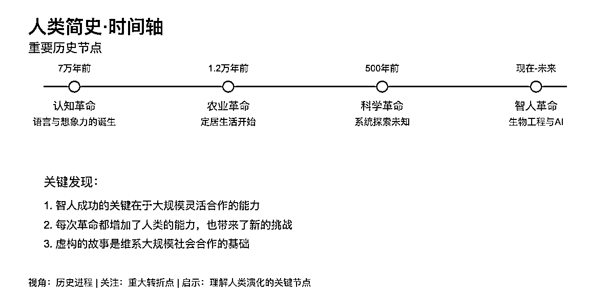
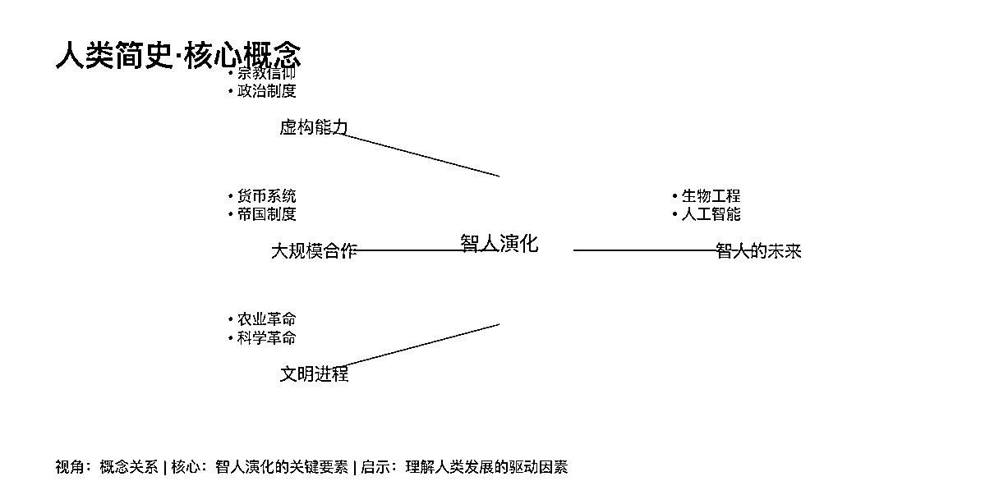
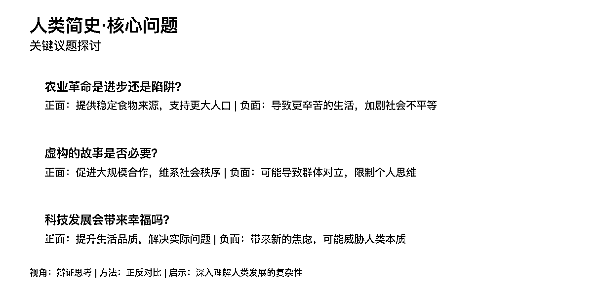
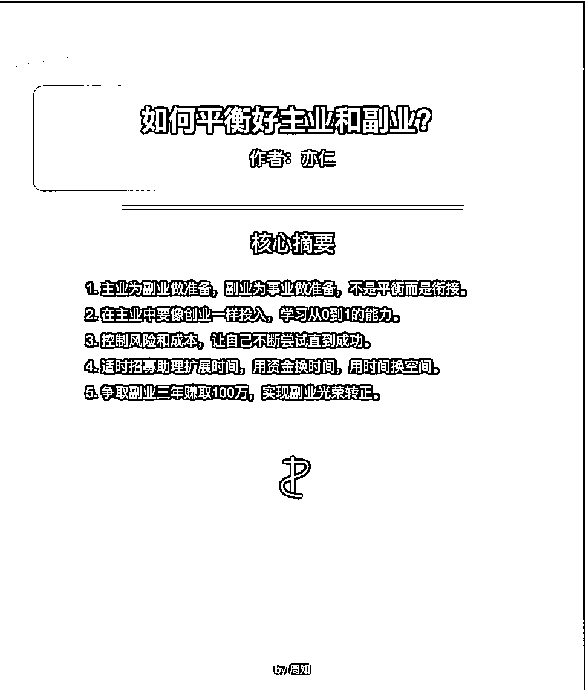
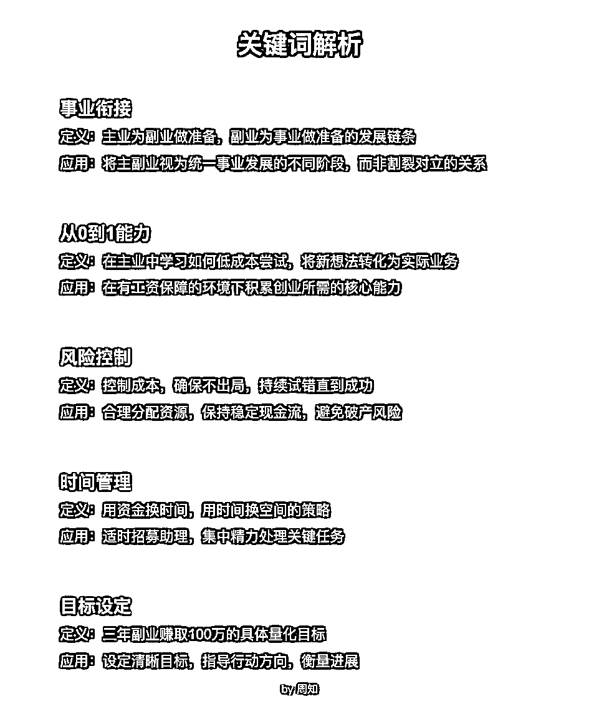
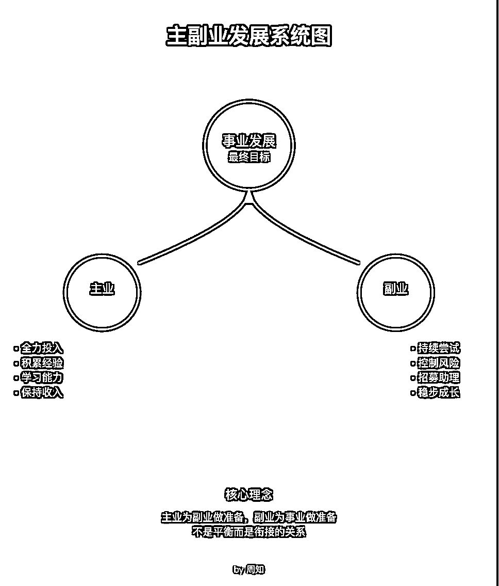


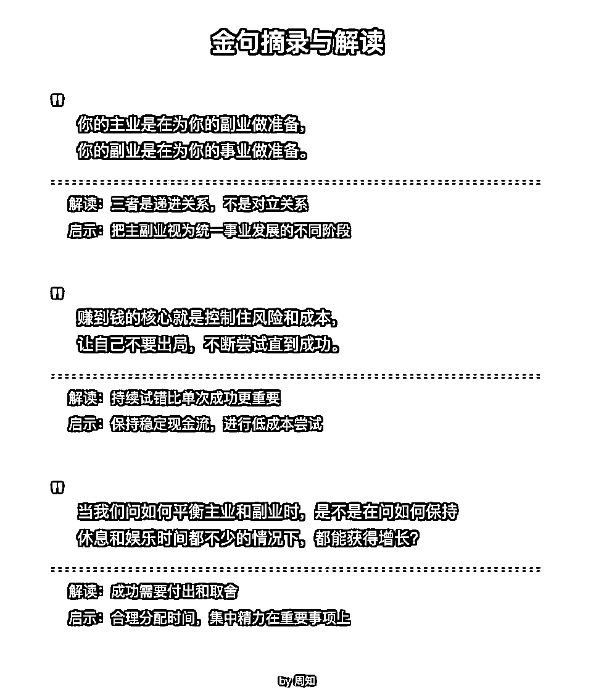
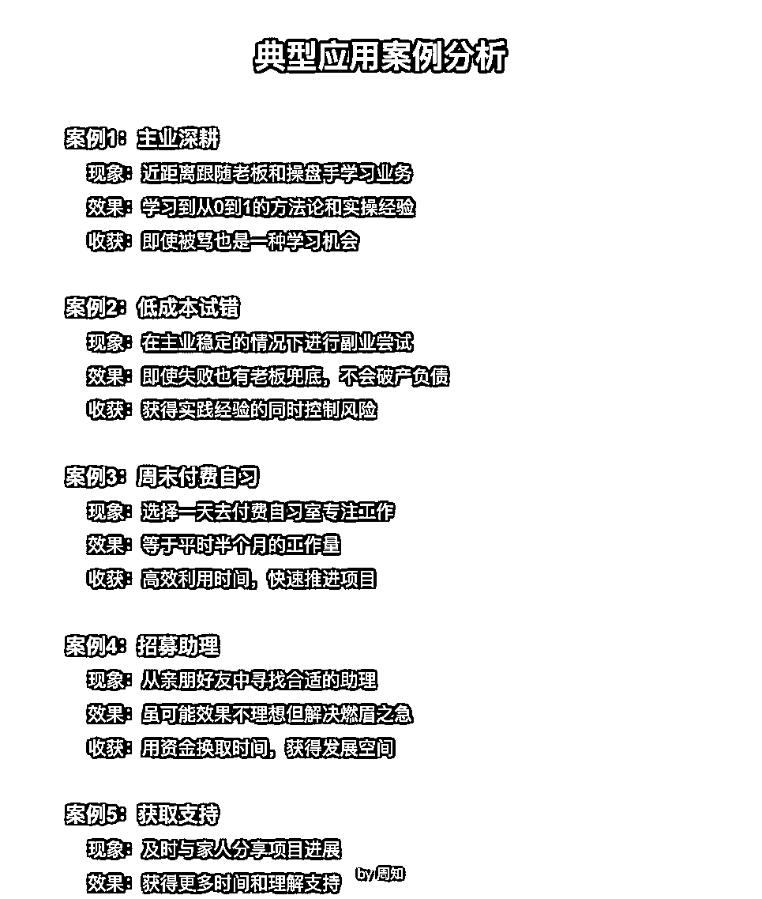

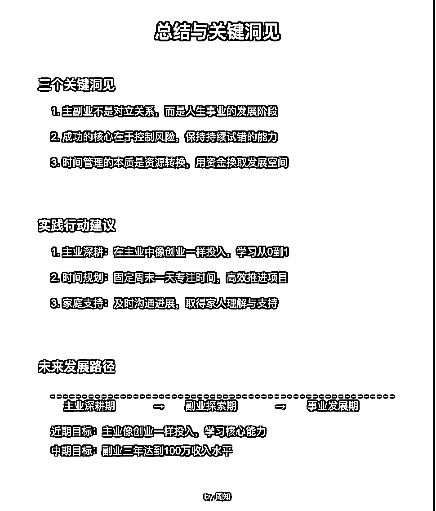
小觉醒——激发你的思维可视化（免费）
体验地址：https://www.coze.cn/s/iAYw5eSu/
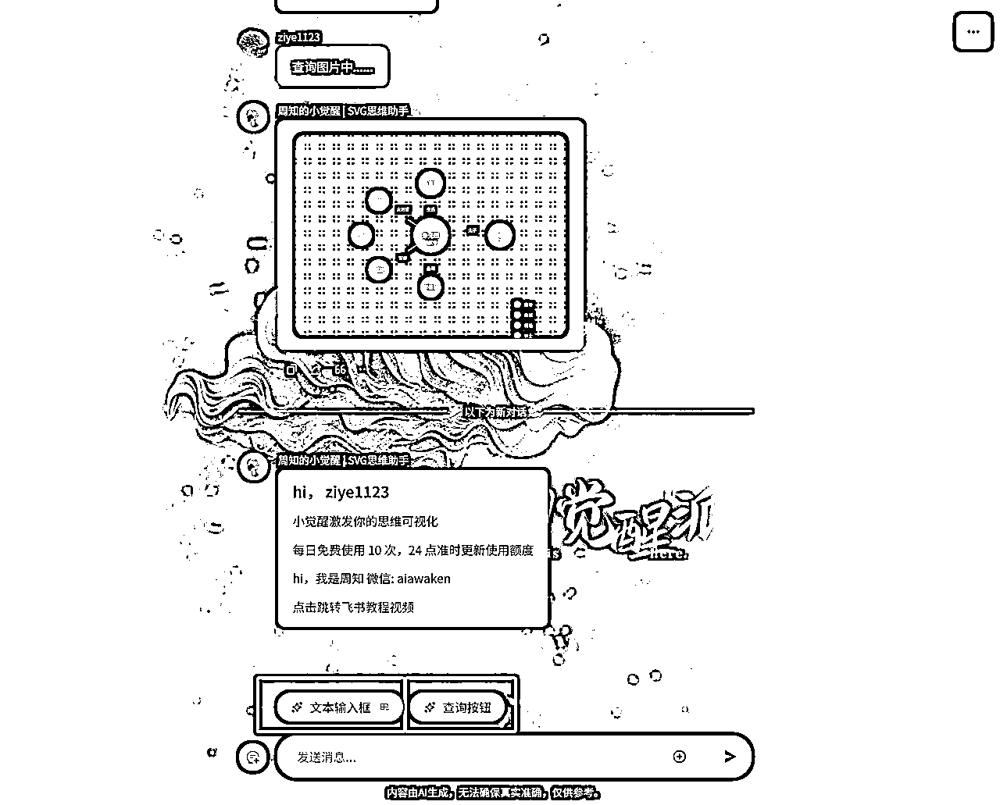
如上图所示，主界面有两个按钮的地方，可以提供给大家操作
用于将需要总结的内容输入进去，然后 Bot 会在后台为您生成 SVG 知识卡片
用于查询当前生成的图片
可以重复查询，一般的生成时间在 1-2min，
请稍微耐心等待一下～
教程视频中给大家展示的是四类文字的图片生成，案例如下：
均是通过文本框去输入，然后直接得到的知识卡片
其实我最近想明白一件事，创业不能过急过慢。 对变现要求不能过急，我的价值观在这，急容易出错。 对过程要求不能过慢，因为它决定我持续挥舞动作是不是对的，是不是有执行差和迭代差的。

解释知行合一

当地时间6日凌晨，美国共和党总统候选人、前总统特朗普在佛罗里达州棕榈滩会议中心发表讲话，宣布在2024年总统选举中获胜。 根据《国会山报》、美国福克斯新闻网等多家美国媒体最新公布的测算，特朗普已收获超半数的选举人票，预计将锁定本次美国总统选举胜局。但其他美国主流媒体尚未发布类似报道。目前美国总统大选计票仍在进行。 另据美国民主党总统候选人、副总统哈里斯的竞选团队方面称，哈里斯暂时不会对其支持者发表演讲，“将于明天讲话”。据美国有线电视新闻网（CNN）11月5日报道，哈里斯竞选团队负责人迪兰（Jen O’Malley Dillon）当晚在发给员工的一份邮件中说，她预计大选结果不会在今晚出来。她说，投票结果要到几小时后才能揭晓。 美国总统选举采取选举人团制度，50个州按人口比例分配选举人票，获得538张选举人票中的至少270张即为获胜。

说明明朝朱元璋皇帝涉及重要人物关系
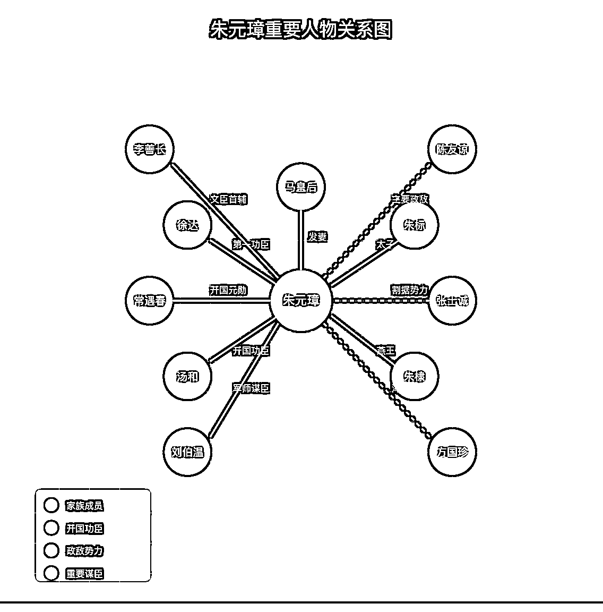
输入《小灯塔 01》

输入：解释小红书的数据飞轮系统

AI 就像一把钥匙，能打开知识的无数扇门。
它让我： 看得更远 （知识上帝视角）
走得更稳 （实践应用）
想得更深 （补全思维）
跑得更快 （学习效率）
但我始终记得：
AI 是放大镜，不是眼睛
思考靠大脑，不靠芯片
验证在行动，不在屏幕
判断由己出，不由人定
知识需串联，不可孤立
毕竟，还是那句话，最强大是那个懂与 AI 协作的你
真正的执行合一，还是靠你。